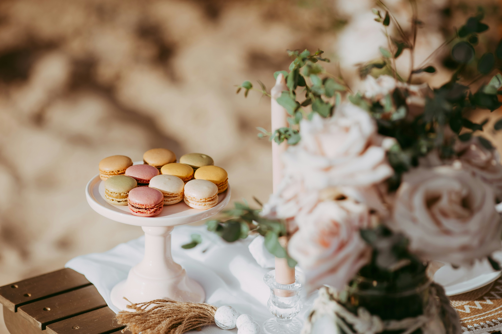

Overview
The macaron is one of the most elegant and recognisable French pastries. It is famous for its colourful appearance, smooth shell and soft creamy filling.
Made using almond flour, sugar and egg whites, macarons are admired for their delicate texture and sophisticated presentation.

The History of the Macaron

The macaron is believed to have originated from almond-based pastries made in the Middle East during the Middle Ages. These pastries were later introduced to Europe by travellers and merchants.
The macaron became popular in France during the Renaissance when Catherine de Medici brought Italian-style pastries to the French court after marrying King Henry II.
Originally, macarons were simple almond cookies made from egg whites, sugar and almonds. In the 19th century, Parisian pastry chefs created the modern macaron by joining two shells together with a creamy filling such as ganache or buttercream.
Today, macarons are one of the most famous symbols of French pâtisserie and are admired for their elegance, colours and delicate flavours.
Popular Macaron Flavours
Macarons are available in a wide variety of flavours, colours and fillings. Traditional flavours include vanilla, chocolate, coffee and pistachio.
Modern pâtisseries also create creative flavours such as raspberry, salted caramel, rose, lemon, passion fruit and lavender.
Their colourful appearance makes them one of the most attractive pastries displayed in French pastry shops.

What Makes Macarons Special

A perfect macaron has a crisp outer shell, a soft chewy centre and smooth filling.
Making macarons requires precision, patience and baking expertise. Even small mistakes in temperature or measurements can affect the final texture.
Because of their elegance and craftsmanship, macarons are often associated with luxury French pâtisserie.
What Makes a Perfect Macaron?
A good macaron should not be too sweet or dry. It should have a light crisp shell on the outside and a soft, chewy centre inside.
The filling should be smooth and creamy, such as ganache, buttercream or fruit jam. The best macarons usually have delicate flavours rather than very strong artificial tastes.
Soft pastel colours often give macarons a more elegant and high-quality appearance, especially when natural colours are used.

Why Macarons Are So Popular

Macarons are popular because they are colourful, elegant and suitable for many occasions. They are often used for weddings, birthdays, baby showers and dessert tables.
They are also given as gifts for special celebrations such as Valentine’s Day, Mother’s Day and Christmas. Their classy appearance makes them look luxurious and thoughtful.
Another reason for their popularity is the wide variety of flavours. Classic flavours include pistachio, chocolate, vanilla and salted caramel, while modern flavours can include raspberry, rose, passion fruit or strawberry cheesecake.
Authentic Macarons
Authentic macarons are not easy to make. They require careful measurements, proper mixing, correct baking temperature and good technique.
Fresh handmade macarons usually have the best texture. When macarons are frozen or mass-produced, they may lose their delicate balance between crisp shell, soft centre and creamy filling.
This is why handcrafted macarons made by skilled pastry chefs are often considered more special and authentic.

Chocolate Macaron
A rich macaron filled with smooth chocolate ganache for a deep and luxurious flavour.
Pistachio Macaron
A classic green macaron filled with creamy pistachio filling and delicate nutty flavours.
Raspberry Macaron
A fruity variation with raspberry filling, admired for its sweet and slightly tangy taste.
Vanilla Macaron
A delicate and elegant version made with smooth vanilla cream and light sweet flavours.
Fun Fact
Macarons are so popular that they even have their own international celebration. Every year on March 20th, many countries celebrate World Macaron Day, where bakeries and pâtisseries organise special events and charitable activities.
The modern macaron did not always look the way it does today. Earlier macarons were simple almond cookies, but French pastry chefs later created the famous version made with two delicate shells and a creamy filling.
Today, luxury pâtisseries continue to create limited-edition macarons inspired by seasons, fashion and special celebrations, making them one of the most elegant symbols of French pastry culture.

Quick Facts
- Made using almond flour and egg whites
- Known for colourful appearance and smooth shells
- Popular in luxury French pâtisseries
- Available in many flavours and colours
Best Enjoyed With
- Tea
- Coffee
- Hot chocolate
- Champagne